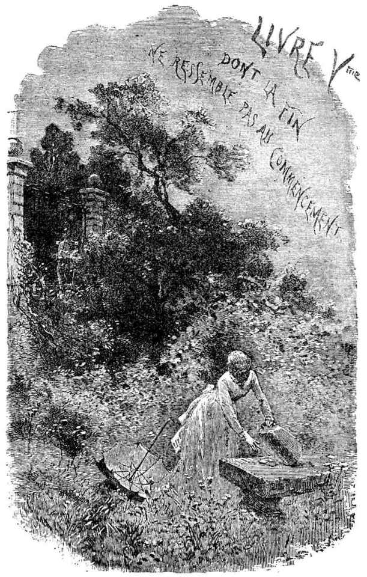

珂赛特的痛苦，在四五个月以前，还是那么强烈，那么敏锐，现在，连她自己也没有想到，居然平息下去了。大自然、春天、青春、对她父亲的爱、鸟雀的欢乐、鲜花，已一点一点，一天一天，一滴一滴地把一种无以名之的类似遗忘的东西渗入了这个贞洁年轻的灵魂。这里的火已完全熄灭了吗？还是只盖上了一层灰呢？事实是她已几乎不再感到有剧痛的痛处了。
一天，她忽然想起了马吕斯。
“啊！”她说，“我已经不再想他了。”
正是在那一个星期里，她发现一个相当俊美的长矛兵军官打那园子的铁栏门前走过，那军官有着蜂腰、挺秀的军服、年轻姑娘的脸、手臂下一把指挥刀、上了蜡的菱角胡子、漆布军帽，外加上浅黄头发、不凹不凸的蓝眼睛、圆脸，他庸俗、傲慢而漂亮，完全是马吕斯的反面形象。嘴里衔一根雪茄。珂赛特在想：“这军官一定是驻扎在巴比伦街的那个部队里的。”
第二天，她又看见他走过。她留意了他走过的钟点。
从那时候起，难道是偶然吗？几乎每天她都看见他走过。
那军官的伙伴们也发现了在这座“不修边幅”的园子里，那道难看的老古董铁栏门的后面，有一个相当漂亮的货色，当那俊美的中尉走过时，几乎老待在那地方，这个中尉，对读者来说并不是陌生人，他叫忒阿杜勒·吉诺曼。
“喂！”他们对他说，“那里有个小娘们儿对你飞眼呢，留意留意吧。”
“我哪有时间，”那长矛兵回答说，“如果要留意所有对我留意的姑娘，那还了得？”
正在这时，马吕斯怀着沉痛的心情，向着死亡的边缘走下去，并且常说：“只要我能在死以前再和她见一次面就好了！”假使他的这个愿望果真实现了，他便会看见珂赛特这时正在瞄一个长矛兵，他会一句话也说不出来，饮恨而死。
这是谁的过错？谁也没有过错。
马吕斯的性格是陷进了苦恼便停留在苦恼里，而珂赛特是掉了进去便爬出来。
珂赛特并且正在经历那个危险时期，也就是女性没人指点、全凭自己面壁虚构的那个一失足成千古恨的阶段，在这种时候，孤独的年轻姑娘便好像葡萄藤上的卷须，不管遇到的是云石柱子上的柱头还是酒楼里的木头柱子，都会一样随缘攀附。这对于每一个无父无母的孤女，无论贫富，都是一个危机，一种稍纵即逝、并且起决定作用的时机，因为家财并不能防止错误的择配，错误的结合往往发生在极上层；真正的错误结合是灵魂上的错误结合，并且，多少无声无臭的年轻男子，没有声名，没有身世，没有财富，却是个云石柱子的柱头，能撑持一座伟大感情和伟大思想的庙宇。同样，一个上层社会的男人，万事如意，万贯家财，穿着擦得光亮的长靴，说着像上过漆的动人的语言，如果不从他的外表去看他，而是从他的内心，就是说，从他留给一个妇女的那部分东西去看他，便只是一个至愚极蠢、心里暗藏着多种卑污狂妄的强烈欲念的蠢物，一根酒楼里的木头柱子。
珂赛特的灵魂里有了些什么呢？平息了的或睡眠中的热烈感情，游移状态中的爱，某种清澈晶莹、到了某种深度便有些混浊，再深下去便有些灰暗的东西。那个俊美军官的形影是反映在表面的。在底层上有没有印象呢？在底层的极下面呢？也许有。珂赛特不知道。
突然发生了一桩少见的意外事件。